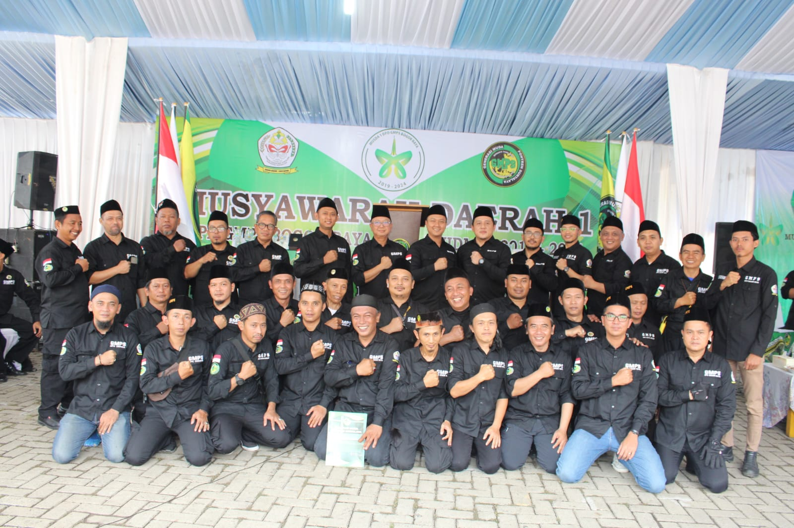

Browser Anda tidak mendukung video tag.
GENERASI MUDA PONTREN SURYALAYA
Alamat:
Home
Struktur Organisasi
Program dan Kegiatan
Galeri
Tentang Kami dan Kontak
Highlight berita
Highlight berita
Highlight berita
Selamat Datang di GMPS
Highlight Kegiatan Terbaru

Deskripsi singkat dari kegiatan terakhir yang dilakukan.
Video in YouTube
Your browser does not support the video tag.
Bergabung Menjadi Anggota GMPS
Klik link di bawah untuk daftar
Gabung